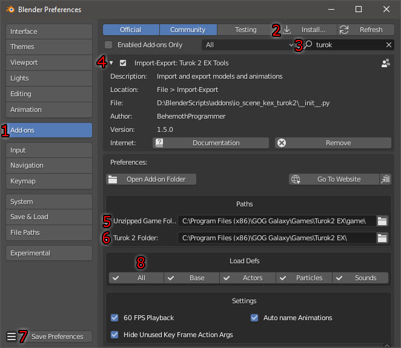

Turok 2 EX Tools v1.5.0 Documentation
By BehemothProgrammer
Installation

Open Blender and navigate to Edit > Preferences
|
 |
Importing
Staticmesh
|
|
Skinnedmesh
|
|
Exporting
Staticmesh
|
|
Skinnedmesh
When exporting Animations, make sure you give it a fake user by pressing the little shield icon and then an F will be displayed to the left of the animation name in the list. Otherwise the animation will not be exported. Validate the Skinnedmesh and check the System Console for any errors/warnings. |
|
Creating A Custom Skinnedmesh
- For any new bones you create remember to go to the Bone Properties panel and click the “Setup Turok 2 Bone” button. This will set it's head/tail position correctly and other settings.
- Make sure to setup your Bone Indexes correctly for each bone in the Bone Properties panel starting from 0 to the number of bones in the armature
- Maximum number of Bones a Skinnedmesh can have is 255
- Maximum number of Vertices a Skinnedmesh can have is 65535
- Vertices can only be in 1 Bone Vertex Group and must have a weight of 1.0
- Turok 2 does not support scaling for anything. Bones, Armature, the Mesh, and Animation Key Frames.
- Note: In game, actors are usually scaled by 1.427501 (0.5 in game scale) and 2.855002 (1.0 in game scale).
Editing Turok Properties
Object Panel


|
Type: The Type of Turok Object this Blender Object is: None, Staticmesh, Skinnedmesh, Bounding Box, Hot Point. Preview TextureSet: Preview how the Skinnedmesh will look with a texture set variant. Yaw Offset: Add Yaw Offset key frames to your animation to rotate the root bone in game. Yaw Offset key frames are used in AI Turn Animations. So this way the models root bone can rotate differently from the actual way the AI is turning towards in game.Validate Skinnedmesh: Press this button to make sure everything is setup correctly and ready to be exported to Turok 2. Info/Warnings/Errors will be displayed in the System Console. FPS: The Frames Per Second the animation will play at. Frame Scale: This value is unused and serves no purpose. Blend Length: The length of frames to blend into this animation (default 5) Blend Start: The frame to start blending Blend End: The frame to end blending Loop Frame: The Frame to go after the animation has finished playing. Setting this to the last frame of the animation will make it stop when it finishes playing. So most of the time you want this at either frame 0 or the last frame. Action Key Frames: Add/Remove/Select Action Key Frames that will trigger in game. With a Action Key Frame selected you can edit it's properties.
Head Tracking: Assign the Start and End Bones that are the Neck and Head of the model so it will look at it's target. Assign None if you don't want any head tracking. Bounding Box: This displays the current min and max values of the bounding box parented to this armatures mesh object. Use the "---Show/Hide Bounding Boxes---" Dropdown menu to quickly show or hide certain bounding boxes. Add Hot Point: You can Add a new Hot Point to a Bone in this panel as well. Select a bone from the menu and click Add Hot Point. A new Hot Point Object will be created and added to the Armature.
|
Bounding Box Object Panel

|
This displays the min and max values of this Bounding Box. Use the "---Show/Hide Bounding Boxes---" Dropdown menu to quickly show or hide certain bounding boxes. Switch to Edit Mode and modify the mesh to edit the min and max values. |
Hot Point Object Panel

|
Use the "---Show/Hide Hot Points---" Dropdown menu to quickly show or hide certain Hot Points. Bit: The Hot Point bit value to use for this Hot Point. 3 out of the 32 bits are used in game for specific purposes, the other 29 can be used for custom purposes.
Particle 1 ID: A particle to spawn at the Hot Points location every tick while this Hot Point is on. Particle 2 ID: Another particle to spawn at the Hot Points location every tick while this Hot Point is on. |
Bone Panel

|
Bone Index: The Bones index value will specify the order the bone is saved. You must give it a unique value starting from 0 to the number of bones in your armature. Impact Type: The impact type this bone is. Damage Scalar: Damage multiplier for hitting this bone. Symbols: These describe the location of the bone. Collision: Specifies whether or not this bone will have collision depending on attached models, such as don't do collision if head has been blown off, etc. Each number represents the attached model index. If that number is ON then that bone will have collision with that attached model. Bounding Box: This displays the current min and max values of the bounding box parented to this bone. Use the "---Show/Hide Bounding Boxes---" Dropdown menu to quickly show or hide certain bounding boxes. Add Hot Point: You can Add a new Hot Point to this Bone in this panel as well. Click Add Hot Point to create a new Hot Point that will be parented to this bone. |
Animation Action Panel
In Blenders Dope Sheet Viewport, in the action editor, you can select animations and view the Turok 2 Properties panel by pressing N or dragging the right side out. This action panel is the same as the one in the Armatures Object Panel, so see that for the same details.
3D Viewport Tool Panel

|
In any 3D Viewport window, you can view the Turok 2 Tool panel by pressing N or dragging the right side out. Setup Player Model Scale: Creates a box object that is the same scale as the Player Setup Weapon Camera: Setup a Weapon Camera which matches the Turok 2 EX camera so you can easily see what your weapon will look like in game (Activate the camera with the default key “0” on keypad). Sound Test: Open a folder that contains .ksnd files to show them in a list. Click on them in the list to play them. You can also select sounds by ID value and play them. Staticmeshes: Open a folder that contains .staticmesh files to show them in a list. Click on them in the list to quickly load them. Click the Disconnect Button if you want to keep that mesh in Blender. Skinnedmeshes: Open a folder that contains .skinnedmesh files to show them in a list. Click on them in the list to quickly load them. |
Material Panel
If the name of the material is any of the following: _default, _white, _whiteAlpha, _wireframe, _wireframe_selected, _superrok_white, _superrok_black, _superrok_red the games builtin material will be used for it instead.

|
Convenience Functions: To quickly assign a texture to this material – select an image by clicking on the image icon on the left or opening a new texture, and select the type: One Sided, Two Sided, or Water. And if the image that you selected has any alpha in it. Then click Quick Image Setup and the shader node with the selected image will be added to the material and the Turok 2 material properties will be setup automatically. Import Material from .kmat: Import a material from an existing .kmat file. Use Custom Material Path: If ON will save this material to the specified .kmat file (do not include the extension .kmat in the Material Path). If is OFF will automatically set the material file path to materials/mat_<ExportFileName> Environment Color: Generally, the texture color is interpolated to this color by the pixels alpha value. Then that's multiplied by the Diffuse Color. Diffuse Color: Generally, multiplies pixel color by this color. Sort: The sort type to render this material on.
Cull: Which side to render Tris.
Surface: Surface type of this material Reflective Power: Screen Space reflection power Blend: Material transparency Full Bright: Do not use any lighting. No Draw: Will not render Depth Test: Draws behind objects based on Depth buffer, otherwise will always draw on top of current render. No Depth Mask: Turns off depth mask. The depth mask masks out areas on the model depending on how far from the camera it is. Alpha Test: Turn ON if you have a texture that uses alpha and use sort type Masked. Discards pixels depending on the outcome of the Alpha Func comparison between the textures alpha value and the Alpha Mask value. Alpha Func: The alpha comparison function (default: gequal) Alpha Mask: The alpha cut off value to discard the pixel. (default: 0.6525) Params: A list of uniform variables the shader will use. Assign the correct names from the shader and specify whether the variable is an Integer or Float. Then assign it's value. There are only 3 uniform variables in the default shader that you can set and you do not need to include them in your materials if you want them OFF.
*The use of the Environment and Diffuse colors will be slightly different for whatever shader the game uses to draw this material, which depends on the type of mesh the material is used on, the material sort type, and whether the materials Full Bright setting is On/Off. Meshes used for pickup actors are automatically set with Full Bright for all materials the mesh uses. Staticmesh Shaders:
Skinnedmesh Shaders:
* world_skinnedColor.shader doesn't appear to be used anywhere. |
Shader Panel
Edit Material Texture Properties In Blenders Shader Editor Viewport and select a Texture Image Node and bring up the side panel by pressing N or dragging the right side out.
|
[Node]File Path: Only the filename will be used and not the full path. If the filename is any of the following: _default, _black, _white, _simpleShadow, _wireframeMesh, _wireframeMeshSelected the games builtin texture will be used for it instead. [Node]Texture Interpolation: Linear, Cubic, and Smart will all use “linear” except if Anisotropic Filter is on then it will use “linear_anisotropic” filtering for the Turok 2 texture. Closest will always use “nearest”. [Node]Texture Extension: Extend and Clip will use the Turok “clamp” wrapping. Repeat will use Turoks “repeat” wrapping. Texture Sampler Index: If you only have 1 texture node then keep this at 0. Mirrored: Overrides texture wrapping to "mirrored" which flips the texture on the x and y when it repeats. Anisotropic Filter: Overrides texture filtering to "linear_anisotropic" when Linear, Cubic, or Smart is selected. |